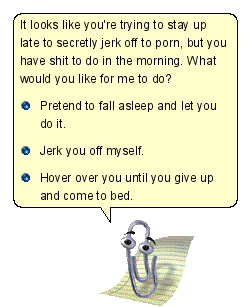

< < < Back
The 15 Magical Years of Womanhood – Return Of Kings
One of the bigger problems plaguing today’s woman is that she’s lost touch with one of her most powerful evolutionary advantages—a well-calibrated internal clock. Remnants of this ancient gift are still visible, if you look closely. On average, I’d say, women are more consistently punctual and meet deadlines more often than men. In college, it was always the girls who left the library the earliest, having finished their work for the day. Past, say, 10 pm, the 24-hour library on campus always became a brutal sausage fest. Say what you will about the quality of the work, the female gender—everything else being equal—is better at getting shit done on time.
Whenever I’ve kept a girl around long-term, my efficiency has skyrocketed since, like the Microsoft Office paper clip, they’re constantly nagging me back on track. “Come to bed.” “We have to leave by 12 to get there on time.” “I’m hungry and don’t like eating dinner after 8.” The other day, I cooked a huge dinner—from scratch—at 3:30 in the morning. I’m single.

For much of human history, this monitoring of time included a keen awareness of the time-limited nature of their fertility and their most valuable evolutionary commodity—their beauty. A properly raised girl used her prime years to lock down a quality man who, enamored with her youthful charms—and the prospect of enjoying them for several more years—signed up for the long-term membership. Women made sacrifices, but understood that the alternative was also a sacrifice.
But more recently, the false promises of feminism have lured girls away from this system—which worked for millennia. For at least the last two generations of women, an ideology that promised them that they could enjoy the benefits of their prime years indefinitely, while also getting everything men were getting, was devastatingly persuasive and irresistible. It seems foolhardy in retrospect—and from our male vantage point—but who could blame them?
Between, say, the ages of 15 and 30, the world is theirs. A woman of even average looks, but a well-kept physique, enjoys a massive amount of power and access. And the cocktail is absolutely intoxicating: constant attention, countless invitations, daily freebies, instant credibility for no other reason than you’re pretty and female. Life is a fast-moving party, with more offers and activity than you could possibly service. If you shadow a hot girl for so much as an hour, you can see the stratospheric quality-of-life they enjoy. In the U.S., their day-to-day is the closest thing we have to royalty status without being famous. The promise of enjoying that for life is seductive, even though it should be patently obvious that–like anything else with all upside and no downside–it’s simply too good to be true.
The great equalizer, of course, has always been that it does come to end. Men may not, on average, enjoy this kind of reward early in life, but their access increases as they enter their late 20s and 30s. Despite minor adaptations to current realities, and individual variance, the arc of a woman’s beauty—and, by extension, power—has remained largely unchanged for generations.
The Timeline For A Girl Of Average-Or-Better Looks (Version 2013)
Age 15
By this age, most girls—with the exception of the latest of bloomers—will have gotten their first taste of the power of their femininity. Boys at their school will have already started doing things for them, in lame attempts to win their favor, and men on the outside will have started to lavish them with attention–setting off a long flow of ego-stroking validation. But, most girls will still be new at manipulating this new tool that’s fallen into their lap. What’s more, their underage status limits their opportunities to hone it, though Facebook, cell phones, and general social permissiveness has accelerated this process in recent years.
Age 17
By their senior year in high school, most girls have at least two years of experience using their female power. As a result, they’ve developed intermediate girl-game, which places them (a conservative) 8-10 years ahead of boys her age in terms of social intelligence. They spend a lot of their day admiring their own (and their peers’) beauty—mostly by constantly snapping pictures of each other and attention-whoring them out to their growing chorus of fawning admirers in the digital world.
Age 22
The four-year carnival called college is coming to a close. During this time, she’s enjoyed the absolute ride of her life—non-stop parties, trips, and gorging herself on the buffet of cock available to an American college girl—without the uncomfortable social stigmas of generations past. At a time where previous generations of women were getting nervous if they hadn’t snared a husband, today’s girl is “just getting started.” At this age, today’s girl is irretrievably drunk on her power. Any cautionary advice will be greeted with hubristic ridicule and disbelief.
Age 25
The first alerts—which go unheeded—that this ride isn’t forever start to rear their heads. The combination of a few harsh pump-and-dumps, and the knowledge that some of her smarter friends are getting hitched, start to impart a hard edge on her personality. Still, with ample beauty left over, most girls will continue to draw from the bank account with impunity.
Age 29
After repeated pressings of the snooze button, it starts getting harder to ignore the clangor of the alarm clock. Having gotten her fill on the party lifestyle—and starting to feel, if not fully understand, the diminished effectiveness of her fading looks—she declares herself “ready to settle down.” Regrettably, the combination of having very little beauty-capital remaining and impossibly high standards—the product of years of enjoying the high life at the expense of her future solvency—will conspire to keep her single.
Age 32
The magical years are officially gone, and the long descent to complete invisibility to the opposite sex is well underway. Thanks to social programming (e.g., Sex in the City and the myth that “a woman’s sexual prime is in her 30s”), she can rationalize that her “Mr. Right” will arrive any minute. However, she’s likely to become little more than a second- or third-stringer in a player’s long roster of options. A few of these women will get bailed out by blue-pill betas, who still buy into the marriage trap, and don’t realize (or care) they’re buying a used car with the odometer rolled back. But this marriage is almost certainly doomed to divorce-failure, since nothing can ever compete with her 15-year prime-time binge. She will be nagged by dissatisfaction the moment her last party–her wedding–ends.
She enjoyed the Sweet 15, but she’ll enjoy little more.
Read More: American Girls Have No Game


{kind=link}
{kind=link}
{kind=link}
{kind=link}
{kind=link}